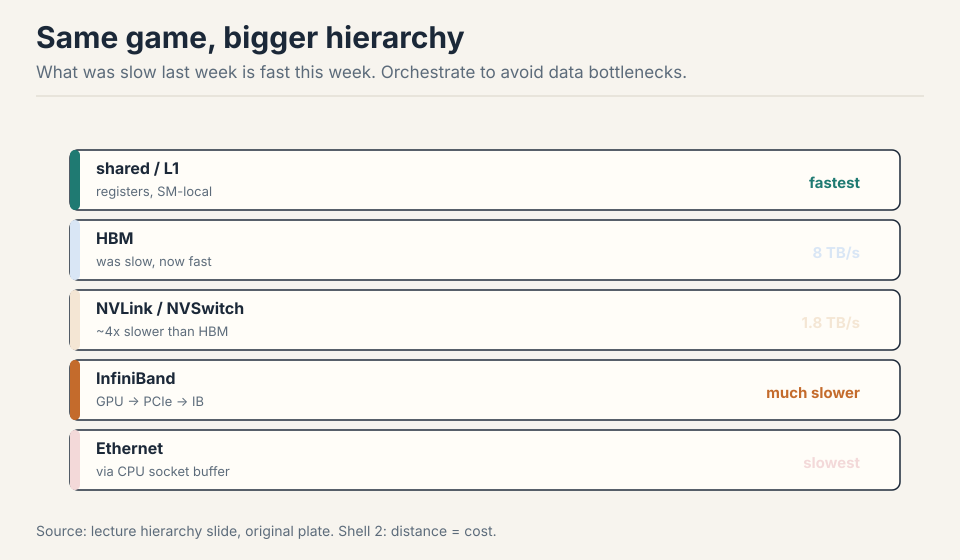
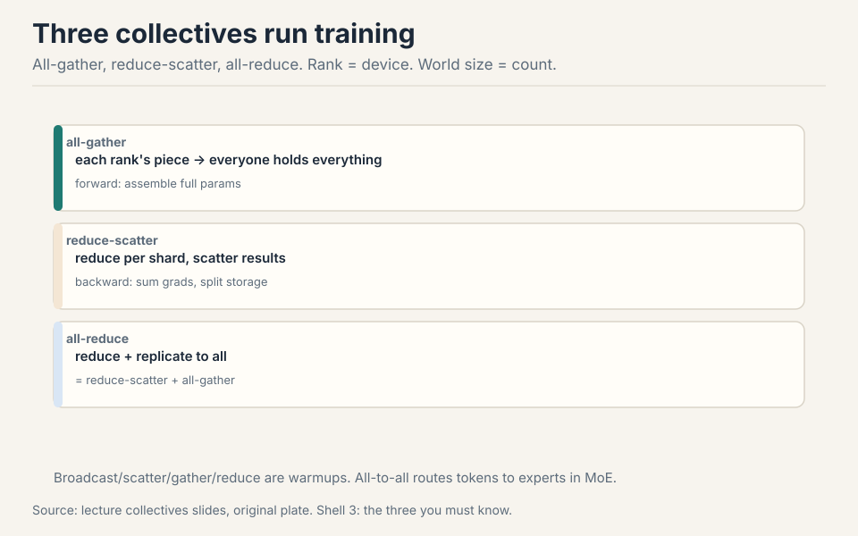
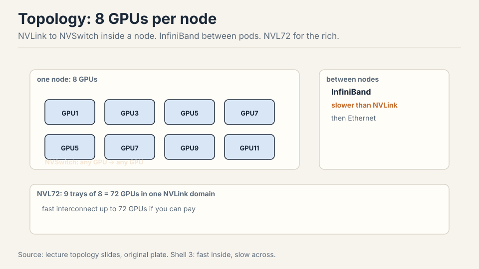
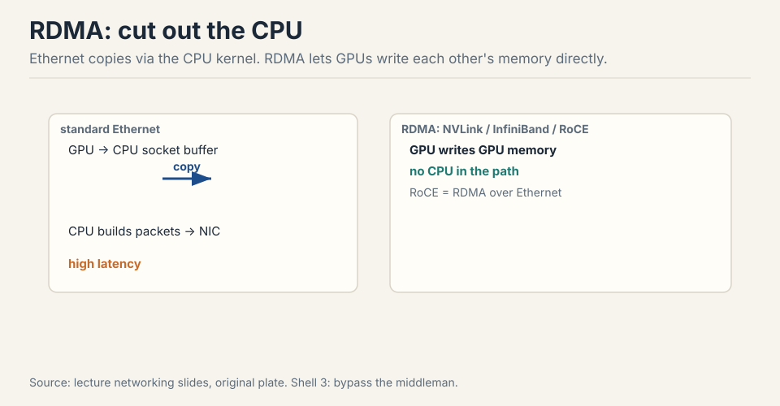
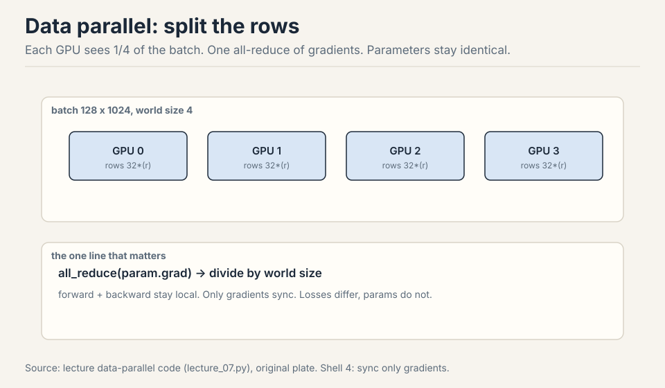
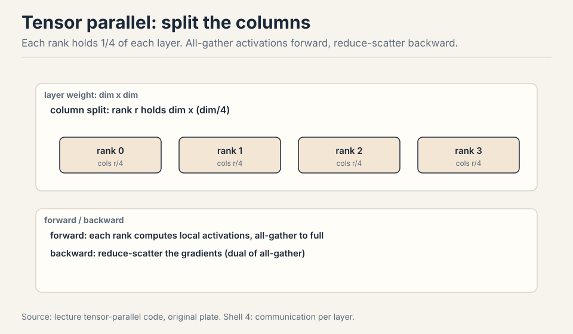
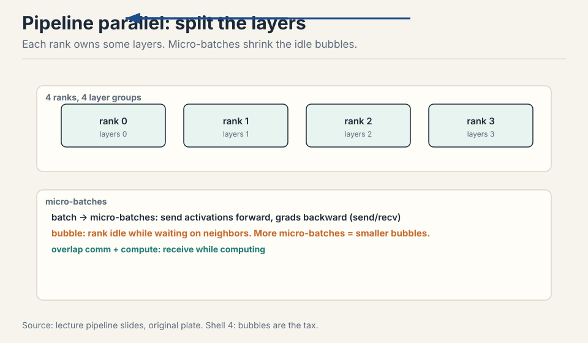
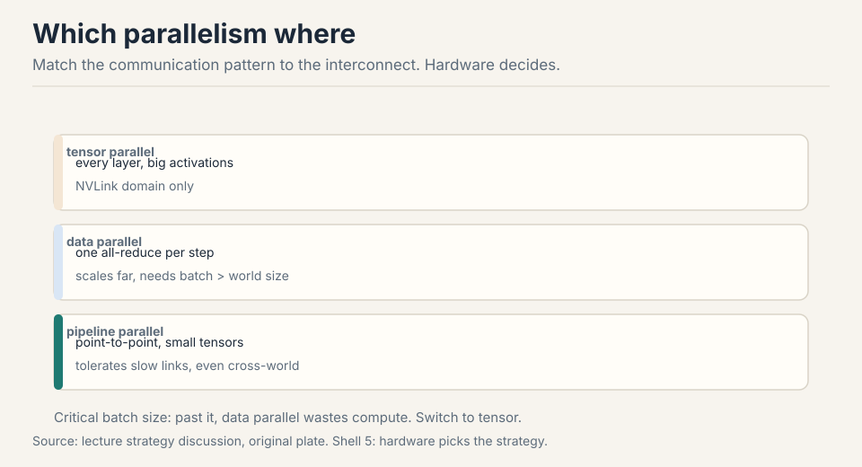

Lecture 7: Parallelism, Data, Tensor, Pipeline
Video blocked (ad-blocker or local file mode).
Watch on YouTubeVideo not loading? Watch on YouTube
Original lecture. Tatsunori Hashimoto builds collective communication and three parallelism styles from scratch on MLPs.
How to read this lesson
Last week made one GPU fast. This week makes many GPUs useful. Two parts. Level 1 (Core): collectives, hardware topology, and the torch.distributed programming model. Level 2 (Deep): the three parallelisms on MLPs, which are the transformer’s compute bottleneck.
Level 1: Why multi-GPU
Two reasons 03:17 ⏱03:17. The model does not fit: parameters, activations, gradients, and optimizer state overflow one GPU’s HBM (B200: 192 GB. 1T parameters will not fit). Or it fits and you want speed anyway. But spreading work costs communication, so the game is orchestration: avoid data-transfer bottlenecks 01:49 ⏱01:49.
The mental model extends Lecture 5’s hierarchy one level out.

HBM was slow last week and is fast this week. Beyond it: NVLink/NVSwitch between GPUs, InfiniBand between pods, Ethernet when you run out of money. Same trick set as before (replicate, shard, tile), one level larger 02:06 ⏱02:06.
Level 1: Collectives
Collectives are communication templates from 1980s parallel programming, still the interface today 05:53 ⏱05:53. Rank = one device. World size = device count. The warmups (broadcast, scatter, gather, reduce) teach the vocabulary. The three that run training:

- all-gather: each rank’s piece ends up on every rank. Forward: assemble full parameters from shards.
- reduce-scatter: reduce per shard, scatter the results. Backward: sum gradients, redistribute storage.
- all-reduce: reduce-scatter then all-gather. One call, sum replicated everywhere 46:05 ⏱46:05.
all-to-all generalizes: each rank sends arbitrary bytes to each other rank. It routes tokens to experts in MoE (load balancing keeps it near a transpose) 17:44 ⏱17:44.
Collectives name the whole pattern at once, so the library (NCCL) can pick the best topology, ring or tree, and pipeline the transfers. Point-to-point forces you to schedule every send and receive by hand, and one wrong ordering deadlocks. The collective is the API that lets the system do the hard work for you. Splitting lets you intervene between the two halves. FSDP all-gathers parameters for the forward pass, computes, then reduce-scatters gradients, never holding the full model. The monolithic all-reduce cannot do that because it never exposes the intermediate. Next lecture’s topic.
Level 1: Hardware topology
Eight GPUs per node, NVLinked to an NVSwitch: any GPU reaches any GPU and the switch routes 23:35 ⏱23:35. NVLink 5 gives 1.8 TB/s, about 4x slower than B200’s 8 TB/s HBM 23:56 ⏱23:56. Beyond the node: InfiniBand, much slower. Beyond that: Ethernet, slowest, and it routes through the CPU.

RDMA is the reason the fast paths are fast: a GPU reads or writes another GPU’s memory directly, no CPU in the loop 27:05 ⏱27:05. Standard Ethernet copies through the CPU kernel’s socket buffer: latency. RoCE (RDMA over converged Ethernet) bypasses the CPU and is the cheap answer to InfiniBand 28:55 ⏱28:55. NVL72 packs nine 8-GPU trays into one 72-GPU NVLink domain for buyers with deep pockets 27:59 ⏱27:59.

NCCL translates collectives into actual packets: it learns the topology, finds paths, and launches communication kernels (everything on a GPU is a kernel) 30:03 ⏱30:03.
Level 1: Programming it
torch.distributed wraps NCCL (gloo on CPU). spawn launches one
process per rank. Setup configures master address/port for coordination
metadata. The data itself moves through NCCL 38:35 ⏱38:35.
barrier() synchronizes processes: async ranks may otherwise interleave
arbitrarily. Benchmarking collectives needs both CUDA synchronize and
the barrier, because there are two asynchronies: kernels and processes
47:28 ⏱47:28.
spawn -> one process per rank setup -> master address and port for metadata barrier -> sync processes (ranks interleave otherwise) NCCL -> moves the data, GPU to GPU
Effective bandwidth check: all-reduce 100M elements in 1.6 ms gives ~400 GB/s 48:41 ⏱48:41. The accounting: 2 x (world-1)/world x size / duration. The 2x is send plus reduce. The (world-1)/world converges to 1, so bandwidth is independent of world size and topology. NCCL handles that. Reduce-scatter moves half the data (no 2x) and lands in the same 400s 52:16 ⏱52:16.
Level 2: Data parallelism
Split the data, not the model. Batch 128 rows across 4 ranks: each gets 32 rows of the 128x1024 matrix 56:44 ⏱56:44. Forward and backward run locally. Then the one line that makes DDP work:
for p in params:
dist.all_reduce(p.grad) # sum across ranks
p.grad /= world_size # average

Losses differ per rank. Gradients start different, all-reduce makes them identical. Parameters stay identical everywhere, forever 60:11 ⏱60:11. DDP is modular: it does not care what the forward pass looks like, so transformers work the same as MLPs 61:47 ⏱61:47. Batch size must exceed world size, ideally by a lot.
Level 2: Tensor parallelism
Split each layer, not the data. Column split: rank r holds dim x dim/4 of each weight matrix 63:37 ⏱63:37. Forward: each rank computes its local activations, then all-gather to full width for the next layer. Backward: the dual, reduce-scatter the gradients 68:12 ⏱68:12.

Unlike DDP, this mucks with the model: every layer communicates, so the interconnect must be fast. Tensor parallelism lives inside the NVLink domain 76:23 ⏱76:23.
Level 2: Pipeline parallelism
Split the layers: rank r owns a contiguous layer group, sees all dimensions and all data eventually 69:42 ⏱69:42. Rank 0 takes input, forwards activations to rank 1 via send/recv, and so on.
The tax is bubbles: ranks idle while waiting on neighbors. Micro-batches chop the batch so work flows continuously, shrinking bubbles 73:00 ⏱73:00. The missing piece (next lecture): overlap communication with computation, receiving while computing, so waiting time nearly vanishes 74:02 ⏱74:02.

Level 2: Which parallelism where

The hardware picks the strategy 76:10 ⏱76:10. Tensor parallel needs NVLink: it moves big activations every layer. Pipeline tolerates slow links: point-to-point, small tensors, so decentralized training uses it across the world. Data parallel scales far but hits the critical batch size: past it, bigger batches waste compute, and you switch to tensor 77:35 ⏱77:35. In practice: tensor within a node, data/FSDP across, pipeline if you still need it.
Uncovered here: sequence parallelism (chop the sequence for attention), expert parallelism (all-to-all for MoE), and the combinations in the assignment.
Tensor parallel inside each 8-GPU node: the per-layer activation traffic needs NVLink bandwidth. Data parallel or FSDP across the nodes: one gradient sync per step tolerates InfiniBand. Pipeline parallel across node groups only if the model still does not fit or bubbles are cheaper than the alternative. Never tensor across the InfiniBand boundary: the per-layer all-gathers would drown. Each rank must receive at least one example, or it contributes nothing and still pays the all-reduce. In practice you want many examples per rank: tiny per-rank batches make the communication dominate and waste the GPUs.
Recap: the whole lesson on one screen
Model does not fit (params, acts, grads, optimizer state), or it fits and you want speed. Either way, orchestrate around data transfer.
Key: hierarchy extends outward
All-gather assembles, reduce-scatter sums and splits, all-reduce does both. Warmups teach vocabulary. All-to-all routes MoE tokens.
Key: all-reduce = RS + AG
8 GPUs per node on NVSwitch, 1.8 TB/s. InfiniBand between pods. Ethernet last. NVL72: 72 GPUs, one domain, deep pockets.
Key: 1.8 TB/s vs 8 TB/s HBM
RDMA: GPU writes GPU memory directly. Ethernet copies via the CPU. RoCE brings RDMA to Ethernet cheaply.
Key: no CPU in the path
Each GPU, 1/4 of the batch. One all-reduce of gradients. Params stay identical. Batch must exceed world size.
Key: sync only gradients
Each rank, 1/4 of every layer. All-gather forward, reduce-scatter backward. Needs NVLink: it talks every layer.
Key: comm per layer
Each rank, some layers. Micro-batches shrink idle bubbles. Overlap comm with compute. Tolerates slow links.
Key: bubbles are the tax
Tensor within NVLink, data/FSDP across nodes, pipeline if needed. Past the critical batch size, data parallel wastes compute.
Key: match comm to links
Official sources and further reading
Official: - Lecture 7 video, slides (lecture_7.pdf), and executable code (lecture_07.py): the collectives and the three parallelisms run live. - torch.distributed documentation: the spawn/barrier/collective API.
Further reading: - ZeRO/FSDP papers: the fancier data parallelism promised for next lecture. - Decentralized training work: pipeline parallel across the world.
Caveats from these sources. The 256-GPU pod number is made up. Eight per node is the real figure. Bandwidth numbers (1.8 TB/s NVLink 5, ~400 GB/s effective all-reduce) are demo measurements on specific hardware. The pipeline code is naive: no comm/compute overlap.
Connections to the other courses
- CS336 Lecture 8: FSDP and ZeRO split the all-reduce. 4D parallelism combines all three.
- CS336 Lecture 4: expert parallelism reuses all-to-all for MoE routing.
- CS229S: NCCL topology and RDMA deepen on the systems side.
Parallelism cheatsheet. Why multi-GPU: model does not fit, or speed. Hierarchy: shared/L1, HBM 8TB/s, NVLink 1.8TB/s, IB, Ethernet. Rank = device. World size = count. Collectives: all-gather (assemble), reduce-scatter (sum and split), all-reduce (both). All-to-all: MoE routing. Topology: 8 GPUs per node, NVSwitch, IB across, NVL72 = 72. RDMA: GPU to GPU, no CPU. RoCE: cheap IB. NCCL: collectives to packets. torch.distributed: spawn, barrier, gloo/NCCL. Bandwidth: 2(N-1)/N x size/duration, ~400GB/s demo. DDP: split rows, all-reduce grads, one line. Tensor: split columns, all-gather fwd, reduce-scatter bwd, NVLink only. Pipeline: split layers, micro-batches kill bubbles, overlap comm. Strategy: tensor in node, data across, pipeline if needed. Critical batch size caps data parallel.
Cut along the cheapest axis. Data splits rows, tensor splits layers, pipeline splits depth. The interconnect decides which cut you can afford.
Sources
- VIDEOLecture 7 video, Stanford Online YouTube
- NOTESOfficial subtitle transcript (en-US)
- CODElecture_07.py, executable lecture code